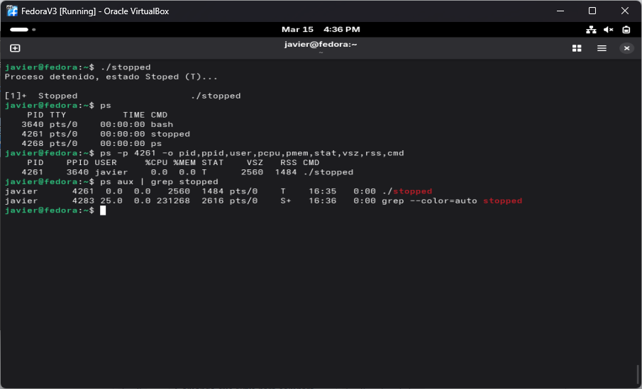
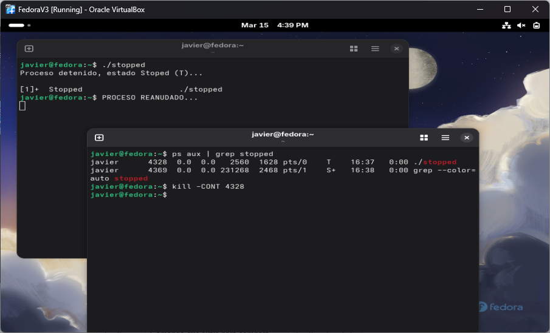
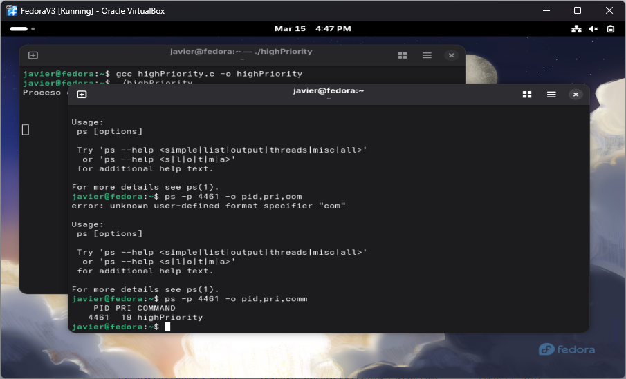
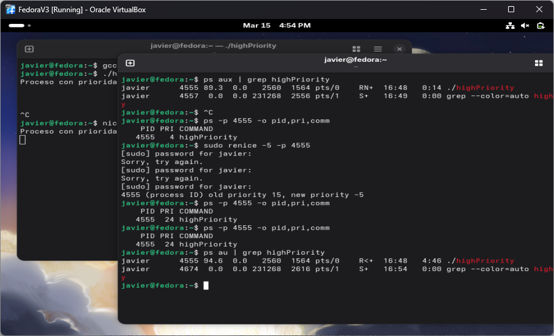
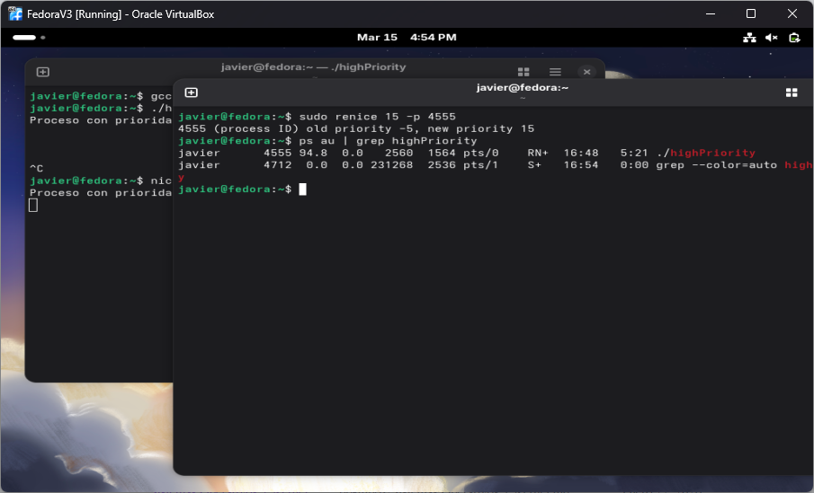
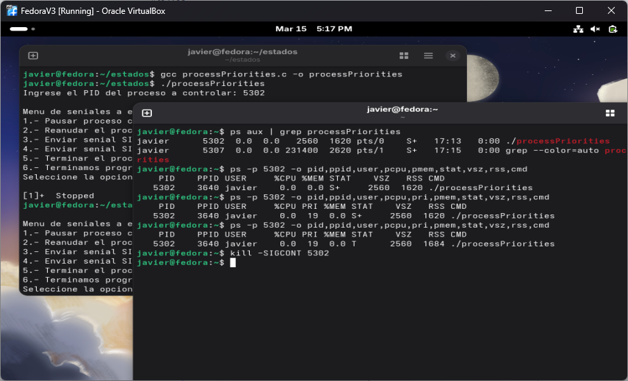

Laboratorio en clase #15: Estados Stop(T), Estado de Prioridad Alta (<) y Prioridad Baja (N)
1. Objetivos
Objetivo General
Entender los procesos restantes como: Stopped (T), Procesos con prioridad alta (<)
Objetivos Específicos
- Crear un programa que muestre el estado de Stopped (T).
- Crear un programa que muestre el estado de Alta prioridad (<).
- Crear un programa que muestre el estado de Baja prioridad (N).
- Crear un programa que pueda recibir varias señales y cambiar los estados del proceso.
2. Investigación y Marco Conceptual
Estado Stopped (T)
En sistemas Linux, cuando un proceso aparece con el estado T, significa que el proceso está detenido o suspendido (stopped). Esto ocurre cuando la ejecución del proceso ha sido pausada temporalmente, generalmente debido a una señal enviada por el sistema operativo o por el usuario. Un caso común es cuando un usuario presiona Ctrl + Z en la terminal mientras un programa se está ejecutando, lo que envía la señal SIGTSTP y detiene el proceso.
Tener un proceso en estado T es útil porque permite pausar la ejecución de un programa sin terminarlo completamente. De esta manera, el proceso conserva su estado en memoria y puede reanudarse más adelante utilizando comandos como fg (para continuar en primer plano) o bg (para continuar en segundo plano). Esto es especialmente útil cuando se necesita liberar temporalmente la terminal o administrar múltiples tareas al mismo tiempo sin perder el progreso del programa que se estaba ejecutando.
Proceso de Prioridad Alta (<)
En sistemas Linux, los procesos pueden ejecutarse con diferentes niveles de prioridad, lo que determina cuánta atención recibe un proceso del CPU en comparación con otros procesos del sistema. Esta prioridad se maneja mediante el valor conocido como nice, que indica qué tan “amable” es un proceso al compartir los recursos del sistema con otros procesos.
. Un proceso con alta prioridad tiene un valor nice bajo o negativo (por ejemplo, -10 o -20). Esto significa que el sistema operativo intentará darle más tiempo de CPU, permitiendo que se ejecute con mayor frecuencia y rapidez que otros procesos. Este tipo de prioridad suele utilizarse en programas que requieren respuestas rápidas o procesamiento intensivo, como servicios del sistema, controladores o aplicaciones críticas que no deben retrasarse.
Prioridad Baja (N)
Por otro lado, un proceso con baja prioridad tiene un valor nice alto o positivo (por ejemplo, 10 o 19). En este caso, el proceso cede más fácilmente el uso del CPU a otros procesos con mayor prioridad. Esto es útil para tareas que no son urgentes, como procesos en segundo plano, compresión de archivos, copias de seguridad o cálculos largos, donde no es necesario que el programa se ejecute inmediatamente.
Linux utiliza estas prioridades para administrar eficientemente los recursos del sistema, asegurando que los procesos más importantes reciban el tiempo de CPU que necesitan, mientras que los procesos menos críticos se ejecuten cuando haya recursos disponibles. Las prioridades pueden establecerse al iniciar un programa con el comando nice o modificarse posteriormente con renice, lo que permite ajustar dinámicamente el comportamiento de los procesos según las necesidades del sistema.
3. Desarrollo Técnico
Paso 1. Programa con estado Stopped (T).
Primero se creo un programa que pudiera demostrar el estado stopped. Como se menciono en el desarollo, el estado de stopped detiene la ejecucion del programa. Este normalmente se recibe con la señal SIGSTOP o CTRL-Z (los cuales ya fueron explorados en otros reportes).
En la Figura 1 se puede ver la evidencia del estado T. El programa dice textualmente que fue detenido y se puede apreciar que al usar ps aux se muestra en la columna de STAT con T.
En la Figura 2 se muestra como se puede continuar la ejecucion del programa al mandarle la señ SIGCONT con el comando kill.
Paso 2. Programa con proceso de prioridad alta (<).
El siguiente programa explora la diferencencia entre un progrmama con alta prioridad. La principal diferencia es que dentro del programa se utiliza la funcion setpriority() esta se encarga de establecer como su nombre lo dice la prioridad. El primer parametro le indica al sistema que va a realizar un cambio de prioridad, el segundo dice que es el proceso actual. Normalmente este parametro se le pone el PID del programa a cambiar pero, con 0 significa el actual, finalmente se le indica que tenga un prioridad alta con -20, este es la prioridad mas alta que podria tener.
En la Figura 3 se muestra la prioridad del proceso con el comando ps. Asimismo la Figura 4 se encarga de cambiar la prioridad con el comando nice
Paso 3. Programa con proceso de prioridad baja (N).
El siguiente programa se encarga de lo contrario. se declara el programa con una prioridad de 19, que es la mas baja.
Paso 4. Programa que controla todos los estados.
Finalmente se creo un programa que recibe diferentes señales para poder cambiar el proceso a diferentes estados. Primero obtiene un pid como input para poder cambiar el estado de otros programas o si mismo. Recibe señales como SIGSTOP, SIGUSR1 y SIGUSR2 para poder cambiar el estado de un proceso.
En la Figura 6 y Figura 7 se puede ver su ejecucion al mostrar el mismo proceso en diferentes estados.
4. Evidencia de Ejecución






5. Conclusiones y Trabajo Futuro
Se siguio reforzando como funcionan los programas en estado stopped (T) y se exploro lo que eran los procesos con alta y baja prioridad. Ya que se vieron todos los estados de los programaes esto ayuda a entender como un programa puede cambiar durante su ejecucion y la importancia de saber como modificarlo.
Trabajo Futuro:> Explorar lo que son los daemons y utilizarlos para automatizar los procesos para ejecutar las tareas dependiendo del horario.
6. Archivos Fuente
Lab15
Contiene: running.c, running02.c, running03.c, running04.c, zombie.c, stop.c, ninterruptible.c, sleeping, highPriority.c, lowPriority.c y processPriorities.c
7. Bibliografía
Reporte generado con ayuda de ChatGPT